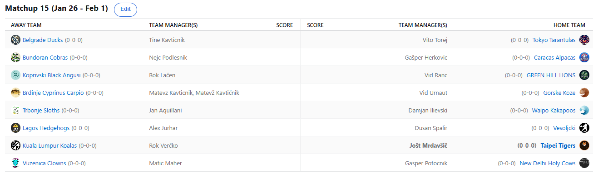

SEZONA 25/26
- Pravila in sistem tekmovanja
- Matchup1 (Oct 21 - Oct 26)
- Matchup2 (Oct 27 - Nov 2)
- Matchup3 (Nov 3 - Nov 9)
- Matchup4 (Nov 10 - Nov 16)
- Matchup5 (Nov 17 - Nov 23)
- Matchup6 (Nov 24 - Nov 30)
- Matchup7 (Dec 1 - Dec 7)
- Matchup8 (Dec 8 - Dec 14)
- Matchup9 (Dec 15 - Dec 21)
- Matchup10 (Dec 22 - Jan 28)
- Matchup11 (Dec 29 - Jan 4)
- Matchup12 (Jan 5 - Jan 11)
- Matchup13 (Jan 12 - Jan 18)
- Matchup14 (Jan 19 - Jan 25)
- Matchup15 (Jan 26 - Feb 1)
- Play-in (Feb 2 - Feb 22)
- Playoff 1 (Feb 23 - Mar 8)
- Playoff 2 (Mar 9 - Mar 22)
- Playoff 3 (Mar 23 - Apr 5)
2025/26 - Fantasy Koroška - sezona 9
MATCHUP 15 (Jan 26 - Feb 1)
Recap: MATCHUP 15
Pa smo zaključili redni del. Nekateri švaserji so sicer zaključili že celo sezono, če izvzamemo popolnoma irelevantno 2,5-mesečno merjenje moči
za 15. mesto. Dule in Kavt bosta tako na svojo novo priložnost morala čakati 8 mesecev in še več.
Da je zadeva za našega Matteona še malce hujša, pa je zdaj, ko aplikacije na telefonu sploh več nima, bil celo najbližje zmagi XD.
Kaj nam to pove? Gre za skill issue tega sicer izkušenega managerja, slabega nasprotnika v zadnjem krogu ali kaj drugega?
Urnaut je tole zmago sicer krvavo potreboval, ob kar nekaj izostankih mu je namreč priigrala dodaten IR spot, ki bi mu utegnil priti prav.
Čaka ga namreč nič kaj prijeten spopad z Aleksom. Lahko Vid naredi človeštvu uslugo in poskrbi za šele prvi izpad Freda v prvi rundi?
To bi vsekakor dalo potencialnih vsebin in zanimivo bo videti, ali lahko Urnaut lansko drugo mesto vsaj delno nadgradi še z eno dobro sezono,
ali pa je enoletni čudež že minil?
Njegov nasprotnik v play-inu je imel še zadnji teden oddiha, preden gre zares. Nasproti mu je namreč stal Dule s svojimi Vesoljčki, ki so že davno na dopustu
in tako nekako je izgledal tudi ta zadnji uradni matchup za Dušana v letošnji sezoni. Fred si ni uspel priigrati 3. IR spota in vnaprej
se pripravljamo na backlash v primeru, da bo le-ta igral ključno vlogo. Fred, ki sicer na veliko gobca, da bracket sploh nima veze, če boš
itak na koncu prvak, pa si je morda vendarle zadal nekoliko pretežko nalogo. Pot do 3. titule ga namreč vodi preko zelo strmih preprek in res
bi se težko odločili v morebitnem četrtfinalu med njim in Cickom, komu bi napredovanje privoščili manj.
No končno pa smo dočakali prekinitev te kot sipina rižota črne serije za celotno ligo. 14 zaporednih zmag je sicer aktualni rekord lige, a Nejcu bo ta naziv ostal kot
slab obliž na rano. Zelo si je namreč želel t.i. invincible sezono, vsaj v rednem delu, če mu že v playoffu itak ne bo uspelo. Zdaj je s tole
izjemno uslugo človeštvu Herko poskrbel, da to ne bo več mogoče. Nesramno je svojega nasprotnika Nejc označil z »švas squadom« in kot vemo,
Karma sekne hitro in boleče in nič drugače ni bilo niti tokrat. Zdaj bo lahko Cicko svoje rane celil skoraj mesec dni, ko bo zaradi BYE-ja
imel prost februar, medtem ko bo Herko četrtfinale lovil proti Maherju, ki je, zanimivo, celo njegova drugo najmanj priljubljena stranka.
V 7 matchupih ga je premagal zgolj 2x in če se po jutru dan pozna, je Gašper in for a wild ride.
Maher se sicer ni proslavil v tej sezoni, a tega smo že vajeni. Tudi zadnji krog ni bil nič drugačen in Matic je zabeležil še jubilejni 10. poraz. Vse skupaj več
ni presenečenje, kajti Maher je z zgolj 35% win ratom sicer historično najslabši manager lige, a vsa statistika in vse številke se pozabijo,
ko pride do playoffov. Tukaj odločajo (v tem primeru) 3 tedni in vsi začnejo z 0-0. Načrte mu je tokrat prekrižal G€P$. S to zmago si je
priigral nekoliko boljše izhodišče in po tem, ko je dolgo dolgo celo trepetal za končnico, bo zdaj vanjo vstopil celo z 11. mesta. A vendarle,
težko bi mu playoff bracket šel manj na roko – nasproti mu bo namreč stalo top3 vroče moštvo lige in momentalni strah in trepet – Kups.
Slednji je bil včeraj celo v igri za najboljši weekly score v sezoni, kar bi mu prineslo veliko ugodnosti, vključno z 10€ in procenti. Kups se je odločil, da vsega
tega ne potrebuje, zaupal je v Sama Hauserja in Justina Champanija in bil, kakopak, razočaran. Šampanjac v El-shitticu med Wizzardsi in Kingsi
sploh ni nastopil … odločitev trenerja namreč, Hauser pa je tekmo celo zaključil v minusu, a ga je TeamWin vendarle ohranil v plusu. Kupsu je
tako zmanjkalo slabih 40 točk in ugodnosti so pripadle Cicku. Jan je tako redni del zaključil na visokem 6. mestu, a mu dodatni IR spot ne bo
kaj dosti pomagal pri problemu imenovanemu Paul George. SSPD =/= IR-eligible in Kups se bo moral znajti drugače. Tokrat je sicer rutinirano
ugnal Kakapoje, ki so sicer z zavidljivih 1280 točkami postali eni izmed highest-scoring poražencev v tej sezoni. Kljub vsemu je to dobra
popotnica za Dilija, ki bo poskušal izboljšati lansko 13. mesto. V play-inu se bo udaril s še enim sophomorjem – Ranacom.
Slednji je črn niz 6 porazov na 7 tekmah prekinil na izjemen način – z zmago proti visoko uvrščenim Angusom. Za Vida bo to šele prva končnica, po tem ko je lansko
sezono sklenil na skromnem 15. mestu. Največji fan Cama Thomasa daleč okrog je tako že izboljšal svojo najvišjo uvrstitev in zdaj lahko
letvico le še prestavlja višje za prihajajoče sezone. V arguably najlažji četrtini bracketa ga ob morebitnem uspehu proti Kakapojem nato
čakajo Tarantele. Kaj bi na drugi strani rekli za Lačna? Še sam najbrž ne ve, kako je sploh uspel biti konkurenčen v tem matchupu. O-ji so
namreč krojili razplet in ob zelo zelo nepravem času je Lačen zdaj precej polomljen. Vendarle mu bo ta 3. IR spot prišel zelo prav in očitno
je obupal nad izpustom Terryja Rozierja na prostost in bo ta signing le novo poglavje v zelo debeli knjigi bleščečih podvigov na tržnici.
Tam imata vsak pol knjige zase rezervirane z Gepsom. Bo pa Lačen v dvoboju Rokov pričakal sicer skozi sezono osmoljenega Verčka in videli
bomo, ali lahko že tako kmalu prepreči sanje o b2b tituli za krotilca Koal.
Verčko je sicer kanonfutrček status ohranil tudi za zadnji krog rednega dela. Že od ponedeljka je bilo namreč jasno, da proti Tigersom nima nikakršnih možnosti in
Jole je tako zabeležil že 8. zaporedno zmago. Vsekakor tudi Tigri stopnjujejo svojo formo, a če jim to ne bo uspevalo še 2 meseca, bo vse
skupaj precej useless. V modernejši zgodovini ima namreč Jole že vse, razen titule in kakopak je to edini pravi cilj za našega LM-ja. Verčko
bo kot že rečeno, obrambo titule začel proti Lačenovskemu, Joletu pa se bo poskušal po najboljših močeh zoperstaviti Tinki Binki.
Najbrž bo slednji potreboval okrepitve v obliki Dipsija in Po-ja, kajti njegove Račke so zdaj v neizmerno slabem momentumu. Tehle 634 točk je celo najslabši izid
sezone, če izvzamemo tisti polovični teden v decembru. Se lahko Tine vendarle nekako sestavi in poskuša zagreniti življenje Joletu, ali pa
je svojo edinstveno priložnost prvega picka tako poceni izpustil iz rok in bo moral v prihodnjih sezonah kaj več poskušati doseči brez Jokiča?
Če drugega ne, je Tine že zdaj najboljši fantasy manager na Brdinjah in glede na skromne dosežke v vodstvu lige razmišljamo, da bi vabilo
poslali še Lekšu. Tokrat je free win s kar 629 točkami razlike zabeležil Vito, ki si je že pred tem priigral BYE in bo te tri tedne z veseljem
izkoristil za celjenje poškodb in trejdanje. Nikakor namreč ne bi želel biti v napetem boju play-in runde, ko bi ti prvega igralca Janisa,
za nameček še poškodovanega, v pravem blockbusterju poslali kam drugam?
Vse kar nas čaka smo že omenili, težko bi izpostavili najbolj zanimiv play-in matchup, zato si lahko le želimo, da poškodbe ne bodo pretirano krojile razpletov in
da se v tem krogu zgodi marsikaj zanimivega. Naj omenimo še, da znotraj tega matchupa prihaja tudi izjemno priljubljen sistem predictionov –
Stavljanje točk na ALL-Star vikendu, kjer se da nadoknaditi ogromno, zato ne pozabite tudi tokratnih predictionov, ko imajo napovedi tudi
x1.25 multiplier.
Srečno vsem!
Best memes